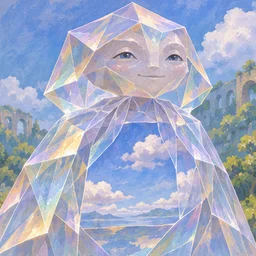
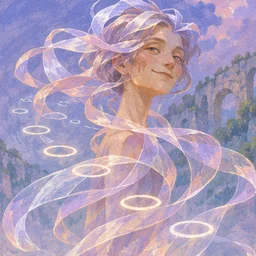
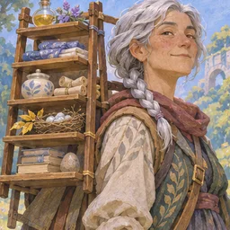
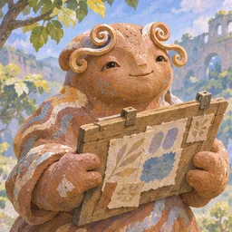
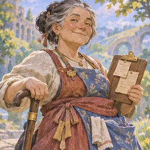

Книга ведущего · Гостеприимное фэнтези о вкусах, изобретательности и разных потребностях · 12+ · 3–8 игроков + ведущий
Кухня на краю грозы
Раз в семнадцать лет духи четырёх погод сходятся у общей скалы. Ваша кухня впервые готовит для них пир из солнечного эха, облачной тени и лепестков обратного света. Один гость хочет вкус первого шага, другой — ясность неподвижного мгновения. Вы отправитесь за невозможными продуктами, изобретёте разные превращения одного ингредиента и проведёте настоящий вечер подач, где новый вкус может оказаться дороже любимого знакомого блюда.
Иллюстрация к первой встрече
Если партия изменила план
Перед чтением вступления сверьте место героев, присутствующих людей и предметы с итогом прошлого вечера. Если условия встречи отпали, сыграйте последствия там, где находится партия. Событие по расписанию может произойти за кадром. Герои узнают о нём от тех, кто был на месте.
Вечер 7. Если гость отказался от своего курса на репетиции
Уточните, хочет ли он уйти, наблюдать или занять место у другого блюда. Перенесите выбранную рассадку на пир. Сохраните отдельную порцию только для того, кто о ней попросил.
Группа отказалась от задания
За общий пир не берёмся. Заварим чай тем, кто захочет остаться после смены. Открываем отдельный стол для гостей со своими порциями. Чай делят между пришедшими. Четыре сезонных течения всё равно сходятся, меню большого пира выбирают другие.
Игроки раскрыли тайну раньше
Сравним четыре приветствия и два независимых отзыва на один пробный кусок. Доступные свидетельства — Четыре приветствия на подносе, Два честных отзыва. Двум гостям нужны несовместимые условия света и тепла. Общее приглашение допускает отдельные подачи. Даём обеим компаниям независимо оценить пробу. Проверяем разницу вкусов на одной подаче. У четырёх гостей могут быть честные разные ответы; погоду чинить не требуется.
Партия уступила поле
Щёлкуны закрыли витрину, приготовленная партия подачи осталась внутри. Пересчитываем целые порции и спрашиваем, кто готов поделиться. Предлагаем гостям простое блюдо из доступного запаса. Недоставленную часть меню отмечаем пустой строкой.
Карман ведущего
Для игры без подготовки: что говорят люди, места в стороне от главной дороги и прохожие. Пометки о правде слухов — только для ведущего; сказанное за столом становится фактом мира, лишь когда вы его подтвердите.
Слухи
«Духи четырёх погод сходятся у общей скалы раз в семнадцать лет. Ничего не сломалось — просто так в долине течёт время».
Правда. Встреча — естественное редкое пересечение сезонных течений; никто не чинит погоду и не управляет скрытым механизмом. Слух удобно дать, если игроки начнут искать виноватого или поломку: кампания о гостеприимстве, а не о ремонте.
«Духи, говорят, едят у повара память: попробуют блюдо — а ты уже не помнишь, как его готовил».
Неправда. Неправда и страшилка для новичков. Никто не отдаёт воспоминаний, чувств или сил: духи едят добровольно созданные сказочные впечатления. Илла или Тинн охотно развеют слух, если герои встревожатся.
«Лепестки с нижней полки у Езги — брак. Хорошее она всегда кладёт наверх, к глазам покупателя».
Отчасти правда. Правда, что дешёвые лепестки лежат внизу: их обтрёпанные края пугают начинающих хозяев. Неправда, что это брак — вкус у них полный, другая только подача. Езга сама покажет нижнюю полку, если спросить о доступной замене.
«На рынке обмен считают вслух, чтобы слышали соседи. Так и спорить потом не о чем».
Правда. Местный обычай Рынка невозможных вкусов. Им удобно открыть сцену у прилавка Езги: она пересчитывает каждую сделку при всех и называет полную цену до согласия.
«Инеечник если молчит и чертит на дощечке ровную линию — значит, обиделся. С ними надо осторожнее».
Неправда. Неправда: Ун и его компания всегда отвечают ровными линиями на гладких дощечках, это их обычная речь. Он не хочет, чтобы о нём говорили как о трудном госте; слух помогает показать, как легко принять чужую манеру за обиду.
«Раковины в саду эхо силой не отдают. Придумай им блик, какого там ещё не было, — тогда отпустят».
Правда. Так и устроен обмен в саду тёплых раковин: зрелое эхо отпускают за новый добровольно придуманный рисунок блика, а не за память. Пятый вечер раскрывает это сразу, слух лишь готовит героев к визиту.
«Под навесами у Ганны спят облачные малыши. Тронешь их полотно — неделю над кухней будет моросить».
Отчасти правда. Малыши правда спят на некоторых полотнах, и брать эти полотна нельзя; рядом достаточно свободных складок. Морось — суеверие ткачей. Ганна сразу укажет свободный материал, угадывать запрет не нужно.
«Глухотучи голосом не говорят. Три ямки на дощечке — это «да», а ровная — что ещё не решили».
Правда. Это знаки Ору, и она сама объясняет их без проверки в третьем вечере. Третий знак — поднятый край, «остановить», — пусть покажет она; главное, что тишина не согласие.
«Кто подаст духам повтор, того второй раз не позовут: им подавай только новое».
Неправда. Неправда. Внимательно повторённое любимое блюдо — честный исход вечера: повтор не даёт нового впечатления, но гости его ценят. Слух полезен, чтобы игроки не считали знакомое меню поражением.
«Овелна тридцать лет держала кухню у нижнего моста. Говорят, и вашей кухней скоро сама командовать начнёт».
Отчасти правда. Тридцать лет у нижнего моста — правда, она сама скажет это в первом вечере. Командовать она не хочет: возьмёт одну названную задачу и расстроится, если её незаметно сделают ответственной за всё.
«Порывникам бегать вовсе не обязательно. Им хватает, если блюдо само немного погуляет над чашей».
Правда. Так говорит и Фрель: порывники едят впечатление безопасного движения, и медленная лента над блюдом заменяет воздушный танец. Акробатики ни от хозяев, ни от гостей не требуется.
Места в стороне
Камень снятой шапки
Валун на тропе, там, где кончается иней северного склона и начинается летний луг. На его макушке вытерта гладкая ямка: пастухи кладут туда шапку, пока переобуваются в лёгкое, и забирают на обратном пути. Говорят, ни одна шапка здесь не пропала. В холодный день на камне лежит иней с одной стороны и сохнет роса с другой.
Ключ двух ковшей
Родник у развилки троп, а над ним на цепочках висят два ковша — медный и деревянный. Вода в долине одна, но пьют её по-разному: медным ковшом зачерпывают те, кто идёт к снегу, деревянным — кто к лугу. Путать ковши не запрещено, только соседи посмеются. Рядом стоит скамейка, и на ней всегда кто-нибудь отдыхает.
Сушильня облачных трав
Навес за кухней, где на верёвках сушат облачные травы. Каждый пучок привязывают за стебель крепким узлом: если оставить свободно, трава к утру уплывёт за перевал. Под навесом мягко и тихо, как в пуховой подушке, и туда любят прятаться от жары кухонные кошки. Старые узлы на верёвках никто не развязывает — по ним считают прошедшие урожаи.
Пастушья печь на перевале
Каменная печь без дома, сложенная пастухами на самом перевале, где тропы уходят из долины. Кто проходит мимо, оставляет в устье щепку для следующего путника, а кто греется — непременно оставляет две. На стенке печи нацарапаны десятки имён и рисунок четырёх знаков погоды, совсем стёртый, — его, говорят, нарисовали после прошлой встречи духов.
Общая посудная у развилки
Деревянный сарай, где хранится посуда всей долины: чаши, подносы, котлы на большие праздники. Посуду здесь не покупают, а берут на время и возвращают вымытой, с ниткой своего цвета на ручке, чтобы видели, кто брал. Хранительница записывает каждый поднос мелом на двери. Новой кухне соседи первым делом показывают дорогу именно сюда.
Столб потерянных лент
Высокий шест у тропы к ступеням мягкого порыва, весь увешанный лентами. Порывы срывают ленты с одежды, шляп и подносов, и кто находит чужую, привязывает её к столбу. Хозяева приходят и ищут свои по цвету. Порывники, проходя мимо, всегда задерживаются у столба, и ленты на нём начинают трепетать сильнее обычного.
Прохожие
Сава Колокольщик
Загорелый пастух в войлочной шапке, с поясом, увешанным овечьими колокольчиками разного размера; каждый звенит по-своему.
«По звону я свою овцу и в тумане найду. А вы своих гостей — по чему узнаёте?»
Может рассказать: Знает, на каком повороте тропы снимают шапку, а на каком надевают, и всегда подскажет короткую дорогу от снега к лугу.
Липа Мятница
Худенькая торговка с корзиной сушёной мяты и венком из неё же на голове; пальцы зелёные от листьев.
«Мята к невозможному не годится, зато хозяевам после смены — в самый раз!»
Может рассказать: Знает, что торговцы на рынке закрывают полки холстами к закату, и успеть к Езге лучше с утра.
Прохор Погодник
Старик с длинной белой бородой, заплетённой в косичку, и с подзорной трубой без стекла, в которую он смотрит на облака.
«Я семнадцать лет назад видел, как они сходились. Тихо было — как в доме, где все спят».
Может рассказать: Помнит прошлую встречу духов: гости поднимались к скале по каменным тропам медленно и молча, никто их не торопил.
Нюта Посудница
Плотная женщина с мелом за ухом и связкой разноцветных ниток на запястье; ключ от общей посудной висит у неё на шее.
«Бери сколько надо, только верни вымытой и с ниткой. Без нитки я и родной сестре не дам».
Может рассказать: Знает, что для большого пира в долине принято брать широкие подставки: на них чаши не съезжают, даже если стол качнётся.
Корней Сушильщик
Высокий сутулый парень в фартуке, облепленном пухом облачных трав; чихает каждые несколько минут и не обижается на смех.
«Узел покрепче, а то улетит! В прошлом году полкорзины за перевал унесло».
Может рассказать: Знает, что облачные травы у порога кухни можно рвать свободно: их сеяли для любой кухни на террасе.
Гаша Ткачёнок
Девчушка лет двенадцати, ученица под навесами, с напёрстком на большом пальце и полоской облачной тени вместо шарфа.
«Тень не тяни, её уговаривать надо. Мне так тётя Ганна сто раз говорила».
Может рассказать: Знает, что старые выцветшие полотна у дальней стены навесов никто не трогает: под ними прадеды укрывали ягнят.
За десять минут до первой игры
Откройте первый вечер, прочитайте правду мира и участников. Остальные вечера — планы, их исход решают игроки.
Выберите пакет под фактическое число игроков. Первые три героя — готовое ядро; остальные добавляются по порядку. Возраст игрока не определяет героя.
Согласуйте темы, длительность и сигнал паузы. Передайте игрокам только players.html; раздатки выдавайте по отдельности после указанного открытия.
Откройте Мастерскую проекта, создайте личный черновик и импортируйте выбранный JSON через загрузку пакета. Проверьте состав и начало в предпросмотре. Запуск кампании подтверждает ведущий штатным действием.
Откройте иллюстрацию завязки отдельно. Портреты героев входят в файл для игроков, портреты встречных — в книгу ведущего. Тактические схемы доступны в разделе карт.
8 вечеров; 150 минут: 10 минут входа или пересказа, три сцены по 40 минут, 10 минут перерыва после второй сцены и 10 минут завершения.
Кухня «Четвёртая ложка» стоит на неподвижной базальтовой террасе над долиной Оваль. Рядом растут облачные травы, а солнечные эха созревают в пустых раковинах. Погодные духи едят вымышленные вкусы и добровольно созданные впечатления. Никто не отдаёт воспоминаний, чувств или жизненной силы. Всё волшебство принадлежит сказочному миру; блюда нельзя повторять по настоящим рецептам.
Тёплое приключение с трудными, но обсуждаемыми решениями; смешная кухонная суета без унижения гостей.
Кулинарное изобретение и проверка догадок
Цена редких продуктов и невидимого труда
Различие вкусов без соревнования
Радость совместно созданного впечатления
Границы
Без отравления еды, пищевого отвращения крупным планом, голода как наказания, насмешек над ограничениями питания или телом.
Не требовать пробовать настоящую еду, закрывать глаза, терпеть громкие звуки или сенсорные упражнения. Любой опыт можно описать словами или нарисовать.
Все ингредиенты вымышленные: лепестки обратного света, хрустинки солнечного эха, складки облачной тени. Не предлагать настоящих рецептов или сбора неизвестных растений.
Перед игрой каждый может отметить нежелательные темы, сказать «пауза» и заменить эпизод без объяснений. Конфликт касается решений, а не ценности человека или существа.
Люди за столом
В игре 3–8 игроков и отдельный ведущий. Первые три героя образуют полный состав кухни; любые знания, инструменты и решения доступны им. Остальные герои добавляют ракурсы, но не обязательные способности.
За столом подростки и взрослые равноправны. Первого говорящего меняйте каждую сцену; взрослый не становится руководителем автоматически. Возраст игрока не определяет героя, класс или сложность задачи.
Каждый выбор принимается устно, запиской или рисунком. Можно пропустить ход высказывания и вернуться после других. Предлагайте равные вопросы: «какую тарелку подать?» и «какую цену гостеприимства мы готовы разделить?».
При параллельной работе назначайте до трёх пар или троек: продукт, пространство, общение. Дайте каждой группе один короткий эпизод, затем верните всех к общему столу до расхода ресурса или обещания. Один игрок не может соглашаться за другого.
В каждой сцене попросите тихого участника выбрать деталь или первый вопрос, но разрешите отказ. Секретные записки не дают права решать за отсутствующих.
Отсутствующий герой занимается обычной кухней вне кадра. Его личные вопросы, риск и обещания откладываются; доступ к общим инструментам сохраняется. При возвращении игрок получает короткий пересказ и сам принимает последствия новых предложений.
Лист кухни имеет четыре строки гостей, три столбца возможных курсов, порции по ингредиентам, шесть жетонов труда и обещанные услуги. У каждого блюда подпишите форму, интенсивность, момент подачи и сигнал изменения. Это открытые заметки ведущего, не автоматическая механика; сведения и образцы доступны без броска.
Все герои используют поддерживаемые классы третьего уровня. Магия и класс помогают красочно описать работу, но не открывают исключительные маршруты. Дополнительные столкновения полностью заменяют часть времени сцены, не увеличивая вечер.
Масштабирование группы
3 игрока
Три основных героя по очереди ведут продукт, превращение и подачу; затем меняются. В финале первый готовит тёплый и прохладный курсы по одной операции, второй ведёт движение, третий — давление. Разрешайте кругами: каждый делает одно действие, затем все четыре блюда доходят одновременно; дополнительные герои и помощники не нужны.
4 игрока
Каждый отвечает за одну погодную форму, а первым согласует общий момент подачи новый игрок каждый курс. Проверяйте вместе число порций; ответственность за свой стол не даёт права расходовать общий запас единолично.
5 игроков
Четыре героя ведут формы, пятый передаёт продукты и принимает просьбы об изменении. Меняйте связного после каждого курса. У каждого есть отдельное действие: преобразование, украшение, вопрос гостю, маршрут либо выбор интенсивности.
6 игроков
Три пары ведут продукты, превращения и подачу. Один в паре действует, другой предлагает изменение или спрашивает гостя; после каждого курса поменяйтесь. Встречайтесь у доски до расхода порций.
7 игроков
Две пары и одна тройка получают продукты, превращения и подачу. В тройке отдельны наблюдение, приготовление и передача; её состав меняется между сценами. Каждый первым предлагает хотя бы одну конкретную вариацию рецепта.
8 игроков
Четыре пары готовят по одному погодному пиру. В первом курсе один превращает продукт, второй подаёт и получает отзыв; во втором роли меняются. Все пары коротко согласуют расход и одновременность перед началом круга.
Первое чтение вслух
Долина Оваль лежит в горах, как раскрытая ладонь, и времена года в ней не сменяют друг друга, а лежат рядом, полосами: на северном склоне блестит иней, на южном цветёт летний луг, над восточным краем висит тёплый осенний дождь, а между полосами тянутся широкие каменные тропы, по которым за полчаса можно пройти от снега до зноя. Над долиной, на неподвижной базальтовой террасе, стоит небольшая кухня «Четвёртая ложка» — ваша кухня, открытая совсем недавно. У неё большие рабочие столы, открытая доска заказов и четыре широкие двери. У порога растут облачные травы, мягкие, как пух, а в саду неподалёку на ветках висят пустые радужные раковины, и в них, как светлячки, переливаются созревающие солнечные эха.
В долине говорят, что раз в семнадцать лет четыре погоды сходятся у общей скалы, и тогда все двери держат открытыми, а у каждого очага ставят лишнюю миску. Сегодня под вечер на кухонное окно садятся четыре совершенно разные тени. Одна звенит, как ложка о край стакана. Другая неподвижна, будто нарисована на стекле. Третья пахнет далёким простором — сухой травой и дорогой. Четвёртая мягко толкает воздух, и занавеска выгибается внутрь. На столе само собой появляется пустое блюдо, и по его краю тонкой линией бежит надпись: «Мы будем здесь в час равновесия. Скажите, как нам войти». У вас есть кухня, открытая терраса и восемь дней, чтобы придумать ответ.
Правда мира · только ведущему
Встреча происходит при естественном редком пересечении четырёх сезонных течений. Никто не сломал погоду и не управляет скрытым механизмом. Гости могут отказаться от отдельного блюда или встречи без наказания.
У теплопевцев вкус возникает при мягком изменении света и тепла; у инеечников — только в неподвижном прохладном отражении. Одна общая открытая смесь не может быть вкусной обоим одновременно. При подаче в разных чашах они остаются за одним столом, но воспринимают самостоятельные миры блюда. Три независимые проверки доступны в четвёртой встрече.
Порывники различают вкус через безопасное движение, глухотучи — через рисунок мягкого давления. Основной вызов кухни — преобразить продукты в эти разные формы и согласовать очередность операций. Исправлять восприятие гостя не требуется.
На пятую и шестую встречи есть шесть жетонов труда. Получение партии стоит один жетон и даёт четыре порции; подготовка одной проверенной формы рецепта стоит один жетон и включает уже испытанные варианты ингредиентов. Две самостоятельные формы стоят два жетона, даже под общим названием. Цена отражает кухонные задачи, не класс и не успех броска; это открытые заметки ведущего, не новые автоматические механики.
Каждая порция обслуживает одну погодную компанию одним курсом. Всего доступны три партии: максимум двенадцать порций; помощь не увеличивает этот предел. Малые бесплатные образцы дают только краткую пробу отдельному гостю, не полноценный курс компании. Один подготовленный рецепт можно повторять, но повторение не даёт нового впечатления. Любой из трёх ингредиентов годится для каждой формы после испытания; дорогое не значит подходящее.
Солнечное эхо яркое и короткое, облачная тень мягкая и длительная, обратный свет даёт один выразительный переход. В финале гости выберут желаемую интенсивность. Две партии и четыре простых рецепта помещаются в шесть жетонов: это два курса для всех, но ограниченный выбор ингредиентов. Третья партия, дополнительный рецепт или резерв труда требуют отказаться от другого расхода либо получить помощь.
Ганна и Овелна могут дать по одному дополнительному жетону труда за конкретный будущий день ответной помощи каждая; максимум два. Согласие явное, отказ допустим, обязательство не магическое. Гости могут добровольно соавторствовать, но не превращаются в бесплатных работников. Ни помощь, ни удачная проверка не создают новых порций.
Нет заранее лучшего меню. Новые открытия, знакомые утешительные блюда и добровольное соавторство требуют разных затрат и оставляют разные неудовлетворённые желания. Будущая служба не считается успешной до действий игроков; неподтверждённое приглашение остаётся предложением.
Повороты сюжета
Только для ведущего. Сюжетные повороты держатся на мелочах, замеченных заранее: посейте их в названные вечера, а раскрытие отдайте героям, если они догадались раньше.
Одного вкуса на двоих не бывает
Команда ищет блюдо, которое понравится всем, и кажется, что всё решает мастерство. На деле одна общая открытая смесь не может быть вкусной и теплопевцам, и инеечникам одновременно: изменение света будит вкус для одних и гасит для других. Продукт исправен, виноватых нет — нужны разные чаши за одним столом.
Что посеять
Вечер 1. Илла спрашивает: «А когда это раскрывается?» — ей интереснее блюдо, которое ещё не всё сказало, и она смущённо за это извиняется.
Вечер 3. Ору не понимает красивый завиток, зато простой широкий рельеф для неё выразителен: вкус зависит от едока, а не от красоты подачи.
Поворот — вечер 4
В комнате проб Илла и Ун пробуют одну общую смесь и описывают противоположное. «Свет чуть сдвинулся — и вкус проснулся», — говорит она. «Свет пошёл — вкус ушёл», — пишет он. Тинн подтверждает: продукт в порядке. Пусть стол сам сделает вывод, что общий рецепт невозможен, а разделение по чашам возвращает обоим их вкус. Если вывод не складывается, его даст сдвоенный лепесток у Чаши неподвижности или следы двух маленьких пиров на террасе.
Что меняется после
Слово «всеобщий» исчезает с доски. Меню теперь строится из самостоятельных форм под общей темой, и каждая следующая встреча — разработка рецептов, а не поиск одного чуда.
Нижняя полка
Кажется, что лучшие блюда выходят из самого дорогого и красивого — ровных лепестков, звонкого солнечного эха. На деле дешёвые неровные лепестки Езги полноценны, а облачная тень держит узор глухотуч лучше дорогого эха. Дорогое не значит подходящее, и честная подпись ценнее рекламы.
Что посеять
Вечер 2. На верхней полке Езги лежат красиво обрезанные лепестки, на нижней — такие же, только неровные. «Край — для глаз, а не для вкуса», — говорит она.
Вечер 3. Ору отвечает узором: облачная тень держит её рисунок дольше звонкого эха, и дороговизна не обещает удобства.
Поворот — вечер 5
На рынке Езга выставляет партию неровных лепестков и на прямой вопрос отвечает: «Новички пугаются обтрёпанных краёв. А вкус у них полный, подача только другая». Плата за партию — не монеты, а честная витрина трёх свойств. Пусть стол сам сравнит её с дорогими продуктами и поймёт, что ингредиент выбирают под гостя, а не по ценнику. Если на рынок не пошли, Езга оставляет на кухонной доске записку с той же фразой.
Что меняется после
Закупка перестаёт быть погоней за лучшим. Команда выбирает продукты под конкретных гостей и подписывает ограничения так же ясно, как достоинства.
Вихрь, который хочет посидеть
Фрель кажется самым весёлым гостем, которому нужны вихрь и зрелище. На деле он устал изображать бесконечную бодрость и мечтает хотя бы часть встречи провести спокойно — просто его компания об этом не знает. Самое нужное ему блюдо — спокойная петля и место, где можно посидеть.
Что посеять
Вечер 1. Фрель просит показать движение, ради которого не надо вставать со стула: «Только без беготни, прошу».
Вечер 3. У ступеней мягкого порыва Фрель сидит, пока его проба бегает по петле: «Движение — блюду, покой — гостю».
Поворот — вечер 7
На малой пробе Фрель просит спокойную петлю, а если герои предлагают выбор силы вкуса или место отдыха, признаётся вполголоса: он устал быть вечным вихрем и хотел бы часть пира просто посидеть, но своим ещё не сказал. Пусть стол сам решит, как сберечь его тайну и при этом дать ему отдых. Если до этого не дошло, Фрель скажет то же в финале, когда его спросят, какой силы вкус он хочет сегодня.
Что меняется после
Порывникам предлагают выбор силы вкуса, и петля становится тише. Для Фреля пир заканчивается не зрелищем, а возможностью отдохнуть, не объясняя этого всей компании.
Восемь вечеров
1. Приглашение на пустом блюде — Превратить неожиданное приглашение в собственный замысел кухни и первую пробную подачу.
2. Рынок невозможных вкусов — Понять свойства трёх ингредиентов и придумать честную замену дорогой эффектной подачи.
3. Формы, которые можно съесть — Освоить превращение одного продукта в разные блюда через материальные опыты и путешествие между тремя мастерскими.
4. Одно блюдо, два мира — Открыть несовместимость общей сенсорной формы и превратить её в задачу разных самостоятельных рецептов.
5. Урожай по честной цене — Выбрать и действительно получить праздничные партии, сохраняя различие между полезным запасом и красивым излишком.
6. Меню с четырьмя почерками — Подготовить конкретные рецепты, связать их очередностью операций и утвердить меню в пределах записанных ресурсов.
7. Репетиция с неожиданным поворотом — Проверить меню на изменившихся просьбах и выбрать, чем команда готова пожертвовать ради действительной подачи.
8. Четыре пира в один час — Действительно провести разные одновременные пиры, ответить на живые изменения и завершить личные истории с сохранением цены решений.
Места
Долина Оваль
Горная долина, где разные времена года лежат полосами света и облаков: снег на одном склоне, летний луг на другом, тёплый дождь над третьим. Между полосами проложены широкие каменные тропы, и пастухи знают, на каком повороте снимать шапку, а на каком надевать. Посреди долины поднимается общая скала, у которой раз в семнадцать лет сходятся духи четырёх погод.
Кухня «Четвёртая ложка»
Небольшая кухня на базальтовой террасе, с большими рабочими столами, открытой доской заказов и четырьмя широкими дверями. Название ей дали по долинной примете: три ложки кладут на стол для своих, четвёртую — для гостя, который ещё не пришёл. Пахнет облачными травами, тёплым камнем и свежей побелкой; посуды хватает, а вот праздничных продуктов пока нет.
Грозовая терраса
Неподвижная площадка с общим длинным столом и четырьмя широкими дверями кухни. Здесь блюда встречаются одновременно: ленты отмечают подачу, подставки удерживают чаши, а над парапетом видны далёкие грозы — беззвучные, как вспышки за стеклом. Базальт террасы не шелохнётся даже в бурю, и камень остаётся тёплым до самой ночи.
Сад тёплых раковин
Сад, где на ветках держатся пустые радужные раковины, повёрнутые устьями к солнцу. В них переливаются маленькие видимые эха солнечных бликов, и в полдень сад тихо звенит, будто кто-то задевает стеклянные бусы. Садовники уверяют, что раковины помнят каждый блик, упавший на них за лето, и отпускают эхо только по-доброму.
Чаша неподвижности
Сухая каменная чаша с гладким прохладным отражением вместо воды. В нём небо стоит неподвижно, даже когда над долиной бегут облака, и любой шаг по краю звучит слишком громко. Край чаши достаточно широк для посетителей и отдельных столиков; говорить здесь принято вполголоса, а отвечать — ровными линиями на гладких дощечках.
Ткацкие навесы тени
Под низкими навесами висят полотна из облачной тени, и под ними всегда прохладно, как в погребе летом. Станки поскрипывают, пахнет влажной шерстью и грозой. Ткачиха складывает полотна в мягкие съедобные для духов узоры и лёгкие чехлы для отдельных чаш, а свободные образцы раскладывает на низкой полке, чтобы каждый мог потрогать.
Рынок невозможных вкусов
Несколько лавок вокруг круглого камня, отполированного локтями торговцев. Здесь обменивают фантастические продукты, рассказывают об их происхождении и показывают образцы, а обмен по обычаю считают вслух, чтобы слышали соседи. Над прилавками звенят солнечные эха в стеклянных клетях, пахнет мятой, озоном и тёплой пылью.
Ступени мягкого порыва
Низкие широкие ступени внутри каменного кольца, где воздух никогда не стоит на месте. Цветные ленты на шестах показывают движение воздуха: по ним видно, куда завернёт следующий порыв. Боковой проход полностью защищён каменной стенкой, и там можно оставить посуду, не опасаясь, что её сдует.
Сад упругих облаков
Крупные низкие облака лежат в каменных клумбах, как спящие овцы, и медленно меняют форму. Если прижать к ним ладонь, отпечаток держится долго и пружинит обратно. Рядом стоят скамьи и дощечки для рисунков: здесь многие разговаривают узорами, а не голосом, и никто никого не торопит.
Комната проб
Светлая комната с широкими рабочими столами, пустыми чашами и подписанными образцами; у некоторых вместо названия стоит аккуратный вопросительный знак. Здесь можно наблюдать опыт, описывать его словами или рисовать; телесное участие не требуется. На стене висит правило, выведенное крупно: менять за раз одну деталь.
Илла Световей
86 лет. Высокий дух в движущихся полосах золотого света; вместо пальцев расходятся мягкие лучи. Представительница теплопевцев, охотно показывает приветствие небольшим изменением яркости.
Место: Сад тёплых раковин
Намерение
Попробовать блюдо, которое постепенно раскрывается, и увидеть знакомых без обязанности постоянно разговаривать.
Собственные знания
Её компания различает вкус только при мягком изменении света и тепла.
Солнечные эха можно собрать после добровольного обмена с садом; одна партия даёт четыре порции.
Она предпочитает постепенное раскрытие блюда и готова сравнить короткий яркий вкус с долгим мягким.
Что говорит
При первой встрече. «Приглашение пришло в золотой рамке — значит, нас ждали. Я так давно не сидела на чужой кухне, что забыла, как это: просто ждать вкуса и смотреть на знакомых».
О неподвижном блюде. «Это красиво. Правда красиво. Только… оно уже всё сказало, как только его поставили. Простите — я не хочу обидеть того, кто старался».
Об Уне. «Ун не скучный. Просто он слышит вкус в тишине, а я — в рассвете. Это не спор, это два разных утра».
О своей просьбе. «Можно чуть медленнее? Не потому что плохо — потому что мне интереснее, когда блюдо ещё не всё сказало».
О саде раковин. «Раковины помнят каждое лето. Отдайте им новый рисунок — и они вернут вспышку, какой у них ещё не было».
В конце вечера. «Я пришла посмотреть на знакомых и не разговаривать всё время. А вышло — и посмотрела, и попробовала, и даже придумала название».
Секрет или личное убеждение
Илла стесняется говорить, что неподвижное красивое блюдо кажется ей пустым. Она боится обидеть старающегося повара, но не считает остальных гостей виноватыми.
Граница и раскрытие
Не согласится терпеть бессмысленную пробу ради вежливости и не отвечает за вкусы иных погодных компаний.
После прямого вопроса о её собственном ощущении отвечает честно без проверки. Показывает две последовательные пробы по просьбе; от участия можно отказаться.
Ун Тихая Кромка

103 лет. Невысокий многогранный дух; внутри его прозрачного плаща неподвижно отражается небо. Гость от инеечников оставляет ответы ровными линиями на гладких дощечках.
Место: Чаша неподвижности
Намерение
Получить ясный вкус устойчивой формы и попробовать, можно ли выразить неожиданность без меняющегося окружения.
Собственные знания
Его компания воспринимает вкус в устойчивом прохладном отражении.
При изменяющемся свете один и тот же лепесток перестаёт ощущаться для него.
Закрытая с краёв чашка сохраняет самостоятельное отражение блюда прямо на общем столе.
Что говорит
При первой встрече. «Я не трудный гость. Я просто ем то, что стоит на месте. Если вам со мной скучно, скажите — я пойму».
О свете. «Свет пошёл — вкус ушёл. Это не жалоба. Это описание. Я пишу то, что чувствую, и ни словом больше».
О закрытой чаше. «Закройте края — и отражение останется моим, даже если рядом Илла светится, как полдень».
О рисунке вкуса. «Вот как исчезает вкус: линия ровная, линия ровная, потом обрыв. А вот как возвращается — обрыв зарастает. Рисунок оставлю вам».
О неожиданности. «Можно ли удивить без движения? Не знаю. Покажите. Если нельзя, я скажу честно, а не вежливо».
В конце вечера. «Я думал, вы сочтёте меня скучным. Вы не сочли. Это я запишу ровнее всего остального».
Секрет или личное убеждение
Ун предполагает, что хозяева сочтут его неподвижность скукой. Это его опасение, а не знание их намерений; он ещё не видел полного меню кухни.
Граница и раскрытие
Не согласится изображать удовольствие и не хочет, чтобы о нём говорили как о трудном госте.
Попросите показать исчезновение и возвращение вкуса либо дать рисунок. Он сделает это без броска и оставит рисунок, даже если сам не придёт на пробу.
Фрель Семишаг

42 лет. Дух из полупрозрачных лент; его шаги остаются маленькими кругами в воздухе. Представитель порывников приносит лёгкие ленты для обозначения проходов.
Место: Ступени мягкого порыва
Намерение
Почувствовать движение блюда, не превращая весь приём в собственный вихрь.
Собственные знания
Порывники едят впечатление безопасного движения; бегать самому гостю необязательно.
Медленно движущаяся лента над блюдом может заменить сложный воздушный танец.
Каменный боковой проход у ступеней защищает неподвижную посуду.
Что говорит
При первой встрече. «Порывники — это не беготня! Ну, не только беготня. Петля бегает, а я могу и посидеть, если позволите».
О ленте. «Медленная лента над чашей — вот и всё движение. Не надо танцевать, не надо крутить поднос. Хотя крутить я люблю».
О боковом проходе. «За той стенкой даже моя бабушка-буря не дует, а она дует везде. Посуду носите там».
О своей компании. «Мои ждут вихря. Я им скажу, что будет петля. Примут ли — не знаю. За них я не обещаю».
Вполголоса. «Знаете… я бы хоть часть вечера просто посидел. Только не говорите моим — они думают, что я никогда не устаю».
О силе вкуса. «Спросите меня до раскрытия, хочу ли я тише. Сегодня, кажется, хочу. Сам удивляюсь».
Секрет или личное убеждение
Фрель устал изображать бесконечную бодрость и хотел бы хотя бы часть встречи провести спокойно. Он пока не сообщил об этом своей компании.
Граница и раскрытие
Не будет требовать акробатики от хозяев или гостей. Не может обещать, что вся его компания примет новую подачу без знакомства с ней.
Когда герои предложат выбор интенсивности или место отдыха, объяснит простой заменитель и спросит разрешения попробовать его.
Ору Тихая Глубь
212 лет. Плотный округлый дух со спокойными углублениями на поверхности; рядом с ним слегка пружинят облака. Представительница глухотуч отвечает узорами на упругой дощечке и не пользуется голосом.
Место: Сад упругих облаков
Намерение
Разделить задуманный для неё вкус, а не только получить место рядом с чужой едой.
Собственные знания
Глухотучи чувствуют вкус в рисунке мягкого давления.
Три широкие впадины означают «да», ровная поверхность — «пока нет», один край вверх — «остановить».
Облачная тень держит узор лучше дорогого звонкого эха; дороговизна не обещает удобства.
Что говорит
При первой встрече (узор на дощечке). «Я пришла есть, а не сидеть рядом с чужой едой. Задумайте вкус для меня — я подожду, сколько нужно».
О молчании (узор). «Тишина — не согласие. Если я не ответила, значит, я ещё думаю. Подождите — и я отвечу».
О мелких деталях (узор). «Мелкое для меня — как шёпот в грозу. Сделайте шире, и я почувствую каждый край».
О продуктах (узор). «Облачная тень держит мой узор дольше звонкого эха. Дорогое — не значит моё».
Поднятый край (узор). «Стоп. Не потому что плохо, а потому что я не успела понять. Начните снова, медленнее».
В конце вечера (узор). «Вы ждали моего ответа. Каждый раз. Это самый глубокий узор этого вечера».
Секрет или личное убеждение
Ору замечает, когда хозяева считают её молчание согласием. Она не обижена заранее, но остановит подачу, если её ответ не дождутся.
Граница и раскрытие
Тишина не является согласием. Не требует, чтобы игроки нажимали на предметы или проходили телесное испытание.
Покажите рисунок вопроса и подождите ответа; Ору даст значения своих трёх знаков без проверки. При уходе оставляет дощечку с этими знаками.
Езга Пять Полок

51 лет. Человек с короткой серебристой косой и пятью маленькими полочками на переносной стойке. Торговка невозможными продуктами показывает происхождение каждой партии и считает обмен вслух.
Место: Рынок невозможных вкусов
Намерение
Продать разумное количество и не обещать, что дорогой продукт понравится каждому.
Собственные знания
У неё есть партия из четырёх порций лепестков обратного света и бесплатные маленькие образцы.
Одна договорённая работа на рынке оплачивает эту партию; её можно выполнить в пятой встрече.
Складки облачной тени и солнечные эха можно приспособить к разным гостям, если отдельно проверить подачу.
Что говорит
При первой встрече. «Пять полок — пять характеров. Цену скажу в конце, иначе вы начнёте выбирать кошельком, а не языком».
О нижней полке. «Новички пугаются неровных краёв. А вкус у них полный. Подача другая, вот и всё. Спросили — показываю».
Об обещаниях. «Я не продаю „понравится всем“. Такого товара нет ни у кого. Есть „подойдёт этому гостю, если подать вот так“».
О сделках. «За отсутствующих не торгуюсь. Пусть придёт сам — или пусть скажет, кому доверил решать».
Об образцах. «Образец — даром. Партия — за работу. Путать одно с другим — первая ошибка молодых хозяев».
О витрине. «Сделайте мне витрину, где новичок поймёт три вещи. Это и будет вашей платой — и моим спокойствием».
Секрет или личное убеждение
Езга держит дешёвые лепестки обратного света на нижней полке, потому что их некрасивые края пугают начинающих хозяев. Они полноценны, но дают другой вид подачи.
Граница и раскрытие
Не заключает сделок за отсутствующих и не выдаёт личные вкусы за универсальный закон.
На вопрос о доступной замене сразу показывает нижнюю полку. Назовёт полную цену до согласия и даст бесплатный образец для испытаний.
Ганна Тенешов
38 лет. Человек с узорными напёрстками, широкими рукавами и лёгким облачным полотном на плече. Ткачиха складывает облачные тени в съедобные для духов узоры и показывает свойства свободных образцов.
Место: Ткацкие навесы тени
Намерение
Получить честно обозначенную помощь и не работать незаметно до изнеможения.
Собственные знания
Облачная тень мягкая и долго держит узор, но её вкус менее яркий, чем солнечное эхо.
Из тени можно сделать устойчивую грань, медленную спираль, петлю движения или узор давления; каждую форму надо отдельно испытать.
Партия из четырёх порций стоит один жетон труда; подготовка одного проверенного рецепта — ещё один. Чехлы входят в обычную посуду.
Что говорит
При первой встрече. «Тень не любит спешки. Потянете — распрямится и сделает вид, что ничего не было. Сначала расскажите, что задумали».
О подписи. «У ткачей так: кто складывал — тот и подписывает. Не ради славы, а чтобы следующий знал, у кого спросить».
О помощи. «Мой день — за ваш день на навесах. Не подарок и не долг на всю жизнь, а обмен. Запишем — и обеим сторонам спокойнее».
О формах. «Из тени можно сделать грань, спираль, петлю, подушку. Но каждую — отдельно испытать. Тень не любит, когда за неё решают».
О вкусе тени. «Она не яркая, нет. Она — как разговор у огня: долгая и тихая, и под конец никто не помнит, с чего начали».
Об усталости. «Я могу работать до изнеможения. Только не хочу. И не надо, чтобы вы этого от меня хотели».
Секрет или личное убеждение
Ганна готова предложить дополнительный день труда взамен будущего дня помощи на навесах, но боится, что гости кухни решат считать это подарком без условий.
Граница и раскрытие
Дополнительный труд возможен только после явного согласия команды на конкретный день ответной помощи. Отказ не ухудшает обычную сделку.
Попросите показать складку или сравнить формы. Ганна даст бесплатные образцы и смету; предложение дополнительного труда оформляет отдельно от обычной сделки.
Тинн Неровный Образец

67 лет. Маленький глиняный дух с широким планшетом и завитками вместо бровей. Смотритель комнаты проб помогает записывать наблюдения, не оценивая гостей и поваров.
Место: Комната проб
Намерение
Чтобы каждый опыт менял одну деталь и любой участник мог его остановить.
Собственные знания
Сравнение отдельной и общей подачи можно провести без расхода праздничной партии.
У него есть сдвоенный лепесток для наблюдения и листы для двух отдельных отзывов.
Результат опыта принадлежит тому, кто описывает собственное ощущение; наблюдатель не может переопределить его ответ.
Что говорит
При первой встрече. «Я смотритель проб, а не судья. Записываю, что вы сделали и что сказал гость. Остальное — не моё дело».
О методе. «Меняйте что-то одно. Поменяете всё сразу — получите ответ, но не узнаете, на какой вопрос».
О своей ошибке. «Однажды я записал „вкусно“ про красивую форму. Гость ушёл голодным. С тех пор всё неизвестное у меня — со знаком вопроса».
Об отзывах. «Ощущение принадлежит тому, кто ест. Я могу его записать, но не могу поправить. Даже если очень хочется».
О мерах. «„Немного“ — это не мера. Для Ору немного одно, для Иллы другое. Напишите, сколько, — или напишите, кого спросить».
Об остановке. «Любой участник опыта может сказать „стоп“. Гость, повар, я. Даже облако в клумбе, если научится».
Секрет или личное убеждение
Тинн не знает устройства всех погодных чувств. Он когда-то ошибочно принял красивую форму за приятный вкус и теперь специально подписывает неизвестное вопросительным знаком.
Граница и раскрытие
Не утверждает заранее, какое меню сработает, и не принуждает духов к повторной пробе.
По просьбе выдаёт доступные образцы и объясняет, как отделить изменение подачи от изменения продукта. Проверка для получения предметов не нужна.
Овелна Два Фартука

59 лет. Человек с двумя фартуками разных цветов, удобной тростью и маленькой доской заказов. Соседка кухни, опытная хозяйка небольших встреч; пришла предложить практическую помощь.
Место: Кухня «Четвёртая ложка»
Намерение
Помочь новой команде увидеть объём работы, сохранив право на отдых.
Собственные знания
До сезонной встречи осталось восемь условных дней; точное расписание меняют хозяева.
На основную подготовку есть шесть жетонов труда и достаточно обычной посуды; праздничные порции ещё надо получить.
Она может принять одну ограниченную задачу за согласованный будущий день помощи на соседском ужине.
Что говорит
При первой встрече. «Два фартука — один для работы, второй для отдыха. Второй я надеваю чаще, и вам советую завести такой же».
О счёте. «Я считаю мелом, а не надеждой. Мел на доске — порции в лотке. Надежда — на полях».
О своей станции. «Одну станцию возьму. Одну, слышите? Если она незаметно станет тремя, я сниму фартук и пойду домой».
Об обещаниях. «Гости приходят раз в семнадцать лет и помнят каждое обещание. Обещайте поменьше — запомнят хорошее».
Об ошибках. «Суп раньше хлеба — не беда, это кухня. Беда — когда никто не сказал гостям, что хлеб будет позже».
Об отдыхе. «Отдыхать — тоже работа хозяев. Усталый повар путает спираль с гранью, а гость это чувствует первым».
Секрет или личное убеждение
Овелна не хочет снова руководить кухней. Она согласится на одну названную станцию, но расстроится, если незаметно станет ответственной за всё.
Граница и раскрытие
Не решает за героев и не заменяет отсутствующих игроков в личных сценах. Дополнительный день помощи не отменяет обязательства команды отдыхать.
Назовите задачу, время завершения и способ отказа. Овелна честно ответит, готова ли взять её, и запишет условия, не требуя броска убеждения.
Возможные финалы
Вкус, которого прежде не было
Условия: Хотя бы две компании добровольно испытали придуманные героями превращения, команда изменила их по отзывам и довела разные блюда до одновременной подачи.
Пир рождает новые вкусы: гости сами дают им имена, а авторство разделяют с кухней. Остальные получают согласованные знакомые блюда; общего победителя нет.
Цена: На опыты ушли труд или запас, поэтому выбор привычных курсов меньше. Некоторые гости предпочитают старые вкусы, а обещанные дни помощи остаются долгом обычных отношений.
Эпилог — читать вслух
Гости уходят под утро, и каждая компания уносит с собой имя — не своё, а блюда, которое родилось этой ночью. Те, кто решился попробовать новое, сами называют свои вкусы, и эти слова звучат совсем не так, как придумала кухня: в них больше погоды и меньше поварского. На доске появляются рецепты с несколькими именами — героев, гостей, мастериц, смотрителя проб. Авторство разделено, и никто не считает это уступкой. Остальные гости получили знакомые, внимательно согласованные блюда, и это тоже был их выбор, а не утешительный приз. Общего победителя у вечера нет. Но опыты стоили дорого: часть труда и запасов ушла на испытания, и привычных курсов было меньше, чем хотелось бы. Кто-то из гостей вежливо признался, что старый вкус ему всё-таки милее. Овелна вешает второй фартук на гвоздь и напоминает о дне на соседском ужине, Ганна — о дне на навесах, если такие дни были обещаны. Это обычные долги обычных отношений, не волшебные и не забытые. Тинн ставит на последнем листе вопросительный знак: что придумает кухня через семнадцать лет, не знает никто.
Знакомое, приготовленное внимательно
Условия: Команда выбрала проверенные формы, исполнила согласованные разные курсы и честно обозначила повторы вместо обещания постоянных чудес.
Теплопевцы, инеечники, порывники и глухотучи получают свои небольшие одновременные пиры. Главным впечатлением становится точность хорошей подачи.
Цена: Редкая встреча проходит без части смелых замыслов хозяев. Надо отпустить несостоявшийся авторский шедевр и признать ценность повторённого любимого вкуса.
Эпилог — читать вслух
Четыре маленьких пира идут одновременно, и ни один не мешает другому. Теплопевцы получают свою спираль, раскрытую в последний миг, инеечники — грань в закрытой чаше, порывники — спокойную петлю над неподвижным блюдом, глухотучи — широкий глубокий узор, который можно прочесть без подсказки. Ни одного чуда кухня не обещала и ни одного не выдала за чудо. Повторы названы повторами. Главным впечатлением вечера становится точность: каждая чаша пришла вовремя, каждая просьба была расслышана до того, как блюдо раскрылось. Илла мерцает ровно и долго, Ун оставляет на камне особенно прямую черту. Фрель, кажется, впервые за весь вечер просто сидит. Ору оставляет на дощечке у двери три широкие впадины. Но редкая встреча прошла без части смелых замыслов. На полях доски остался несостоявшийся авторский шедевр — блюдо, которое так и не решились подать гостям. Его автор смотрит на эту строку дольше остальных, и отпустить её трудно. Овелна говорит, что повторить любимый вкус так, чтобы гость его узнал и обрадовался, — это и есть ремесло. Кухня соглашается — не сразу, но честно.
Меню с несколькими почерками
Условия: Не менее двух гостей по собственному желанию предложили изменение блюда; герои согласовали их участие, помогли испытать идеи и сохранили самостоятельную подачу для остальных.
На общей доске появляются рецепты с несколькими именами. Разные пиры идут одновременно, а участники обмениваются рассказами о том, что придумали.
Цена: Соавторы часть встречи создают блюда и меньше отдыхают. Хозяева отказываются от единого авторского стиля; никто не обязан повторить эту работу в будущем.
Эпилог — читать вслух
На общей доске теперь почти нет рецептов с одним именем. Рядом с подписями героев стоят узор Ору, ровная черта Уна, маленький круг Фреля, золотистый отблеск Иллы — каждый, кто захотел, добавил свою деталь, а каждый, кто не захотел, получил блюдо без чужой руки. Разные пиры идут одновременно, а между курсами гости обмениваются рассказами о том, что придумали, — иногда через переводчика, иногда совсем без слов. Соавторы немало потрудились этим вечером и отдохнули меньше, чем рассчитывали. Никто их не заставлял: они сами предложили, и кухня дважды спросила согласия. Хозяева отказались от единого авторского стиля, и меню теперь похоже не на книгу одного повара, а на тетрадь, которую передавали из рук в руки. Тинн подписывает каждый лист всеми именами и отдельно пишет внизу: «Повторять эту работу никто не обязан». Овелна говорит, что такой кухни у неё не было никогда — и что, может быть, это к лучшему. Через семнадцать лет гости, возможно, придут снова. Возможно, нет. Но рецепты с несколькими почерками останутся на доске, пока кто-нибудь не решит их повторить.
Ужин с незаконченной строкой
Условия: Один или несколько курсов не получились либо стали нежелательны; команда назвала это и дала гостям выбрать доступную замену, короткий визит или уход.
Удачные блюда сохраняют значение, а несостоявшиеся остаются конкретными обещаниями для разговора. Вечер не получает искусственной оценки «успех» или «провал».
Цена: Запасы и редкий вечер нельзя вернуть. Гость вправе не простить разочарование сразу; повторная встреча требует новой подготовки, а не заверения ведущего.
Эпилог — читать вслух
Не всё получилось. Один курс не дошёл до стола, другой стал нежеланным, когда гость передумал, и кухня назвала это вслух, а не спрятала за улыбкой. Гостям предложили выбрать: доступную замену, короткий визит или уход. Кто-то выбрал замену и остался доволен. Кто-то ушёл раньше, оставив на камне свой знак, и этот знак не значит ни прощения, ни обиды — только то, что гость здесь был. Удачные блюда остались удачными, и неудача рядом не делает их меньше. А несостоявшиеся стали конкретными обещаниями для разговора: вот что хотели, вот почему не вышло, вот что можно сделать иначе. У вечера нет оценки «успех» или «провал» — у него просто есть незаконченная строка. Запасы съедены или испорчены, и вернуть их нельзя. Редкий вечер тоже не повторится. Если кто-то из гостей не простит разочарования сразу, это его право, и никакие заверения его не отменят. Новая встреча потребует новой подготовки, а не обещаний. Овелна оставляет на доске пустое место внизу. Тинн рисует рядом вопросительный знак. А кто-то из кухни, уходя последним, тихо дописывает в книгу первое слово следующего рецепта.
Раздатки · выдавать постепенно
Четыре приветствия — Первая встреча: после осмотра подноса «Четыре приветствия на подносе» или передачи подписанных карточек Овелной.
Три невозможных продукта — Вторая встреча: герои рассматривают «Весы яркости и длительности» либо получают от Езги подписанные образцы.
Ответы Ору — Третья встреча: после получения «Азбука мягкого давления» лично или с дощечки у сада.
Два мира одного ингредиента — Четвёртая встреча: после любого из трёх маршрутов — «Два честных отзыва», «Сдвоенный пробный лепесток» или «Следы двух маленьких пиров». Не выдавать раньше.
Открытая доска кухни — Пятая встреча: перед первым расходом жетона труда. Это бланк; вписать только действительно выбранные партии и обязательства.
Четыре основы для собственных блюд — Шестая встреча: осмотр «Круг четырёх превращений» или получение четырёх карточек Овелны; после раскрытия «Два мира одного ингредиента».
Лента подачи — Шестая или седьмая встреча: после «Узел одновременной подачи» либо показа подписанных петель Фрелем.
Оборотная сторона меню — Восьмая встреча: после фактически сыгранного последнего курса и знакомства с «Незаполненная оборотная сторона».
Как читать игровые проверки
Проверки характеристик и навыков, переговоры, часы и последствия из книги разрешает ведущий. Они не являются дополнительными автоматическими правилами приложения. Улики доступны без обязательного успешного броска. Подготовленные встречи начинаются только по решению ведущего; исходы и эпилоги заранее не записаны.
Статус подготовки
Авторская кампания подготовлена отдельным агентом, запрошенным как GPT-6 Astra / max. Проверки пакетов и игровых границ описаны в verification.json и общем отчёте. Живой плейтест с людьми ещё не проведён. Локальная папка с исходниками и книгой предназначена ведущему.